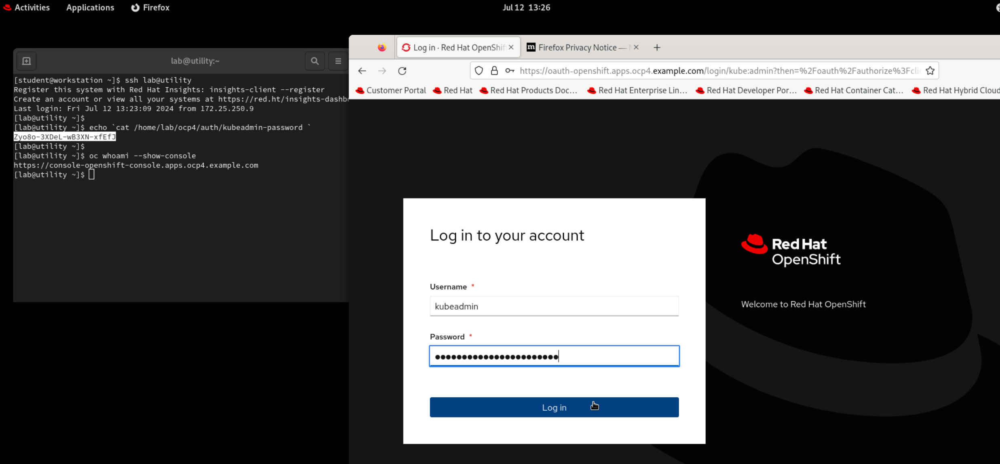

Install OpenShift Data Foundation operator
-
Access GUI console of the
workstationVM asstudentuser. -
Open terminal and login to the
utilityvm aslabuser. -
Get the kubeadmin password from
/home/lab/ocp4/auth/kubeadmin-passwordfile.echo $(cat /home/lab/ocp4/auth/kubeadmin-password) -
Select the password string and copy it.
-
Get the console url of your ocp cluster.
oc whoami --show-console -
Right click on the console url and click on
Open Linkmenu option. -
Firefox browser will open-up with the console login page for your ocp cluster.
-
Provide username as
kubeadminand paste the password in the password field. -
Click on
Log inbutton to access the RedHat OpenShift console. -
On right hand side, expand
Operatorsand click onOperatorHub. -
In the search box type
odfand click onOpenShift Data Foundationoption in displayed search results.
-
Click on
Installbutton on top and then on the next page scroll down to click on theInstallbutton at bottom. -
Wait for the OpenShift Data Foundation operator to get installed.